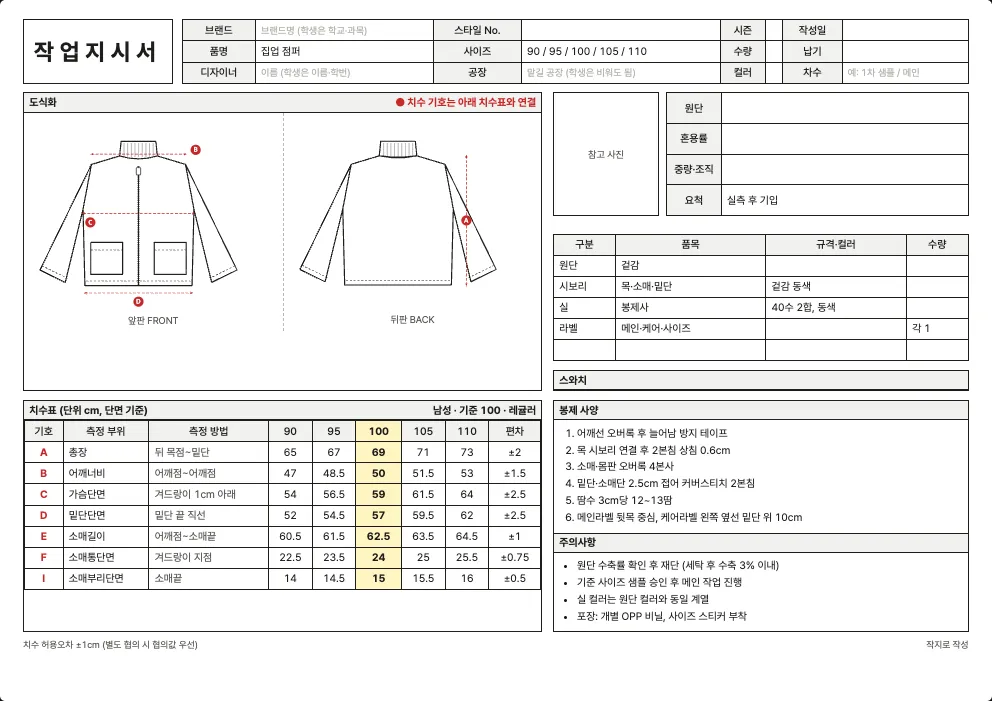

최종 수정 2026년 10월 10일 · 읽는 시간 약 4분
자켓·점퍼 양식 내려받기
집업 점퍼, 블루종(봄버), 코치 자켓, 데님 자켓에 쓰는 엑셀 작업지시서 양식입니다. 소매부리 치수가 있고, 지퍼·주머니·안감처럼 겉옷에서 자주 필요한 정보를 적을 칸을 두었습니다.
| 사이즈 체계 | 엑셀 파일 (.xlsx) |
|---|---|
| 남성 사이즈 (80~110) | 남성 사이즈 (80~110) |
| 여성 사이즈 (44~88) | 여성 사이즈 (44~88) |
| 영문 양식 (해외 공장용) | 남성 · 영문 여성 · 영문 |

자켓·점퍼 작업지시서에서 꼭 챙길 것
- 지퍼 규격: 길이, 종류(메탈·코일·비슬론), 풀러 모양, 열리는 방향(오픈 엔드)을 부자재 표에 적습니다. 지퍼는 자켓에서 가장 자주 문제가 되는 부자재입니다.
- 안감과 심지: 안감을 쓰면 겉감과 안감의 요척과 원가를 따로 계산해야 합니다. 작지 도구의 ‘추가 원단 줄’로 안감, 시보리, 배색 원단을 나눠 적을 수 있습니다.
- 주머니 위치: 외주머니와 안주머니의 위치와 크기, 입구 처리(플랩, 지퍼, 웰트)를 도식화와 함께 적습니다. 위치는 ‘어깨선에서 몇 cm’ 또는 ‘밑단에서 몇 cm’처럼 기준점을 밝히세요.
- 시보리·밴드: 블루종은 목·소매·밑단에 시보리가 달리고, 일반 점퍼는 밴드나 접단으로 끝냅니다. 어느 방식인지에 따라 소매부리단면 치수의 의미가 달라집니다.
- 데님·코팅 원단: 데님 자켓은 세탁 가공(워싱) 때 수축과 색 변화가 크므로 가공 전후 치수를 따로 적어야 하고, 나일론 코팅 원단은 바늘 자국과 방수 처리(심 테이프) 여부를 정해야 합니다.
치수표 (양식에 들어 있는 기준값)
이 양식의 치수표는 7곳(총장, 어깨너비, 가슴단면, 밑단단면, 소매길이, 소매통단면, 소매부리단면)입니다. 기준(샘플) 사이즈는 100(남성)과 66(여성)이고, 단위는 cm이며 단면(납작하게 놓고 가로로 잰 길이) 기준입니다.
남성 사이즈 (80~110)
| 기호 | 측정 부위 | 측정 방법 | 90 | 95 | 100 | 105 | 110 | 편차 |
|---|---|---|---|---|---|---|---|---|
| A | 총장 | 뒤 목점~밑단 | 65 | 67 | 69 | 71 | 73 | ±2 |
| B | 어깨너비 | 어깨점~어깨점 | 47 | 48.5 | 50 | 51.5 | 53 | ±1.5 |
| C | 가슴단면 | 겨드랑이 1cm 아래 | 54 | 56.5 | 59 | 61.5 | 64 | ±2.5 |
| D | 밑단단면 | 밑단 끝 직선 | 52 | 54.5 | 57 | 59.5 | 62 | ±2.5 |
| E | 소매길이 | 어깨점~소매끝 | 60.5 | 61.5 | 62.5 | 63.5 | 64.5 | ±1 |
| F | 소매통단면 | 겨드랑이 지점 | 22.5 | 23.5 | 24 | 25 | 25.5 | ±0.75 |
| I | 소매부리단면 | 소매끝 | 14 | 14.5 | 15 | 15.5 | 16 | ±0.5 |
여성 사이즈 (44~88)
| 기호 | 측정 부위 | 측정 방법 | 44 | 55 | 66 | 77 | 88 | 편차 |
|---|---|---|---|---|---|---|---|---|
| A | 총장 | 뒤 목점~밑단 | 58 | 59.5 | 61 | 62.5 | 64 | ±1.5 |
| B | 어깨너비 | 어깨점~어깨점 | 38 | 39 | 40 | 41 | 42 | ±1 |
| C | 가슴단면 | 겨드랑이 1cm 아래 | 46 | 48.5 | 51 | 53.5 | 56 | ±2.5 |
| D | 밑단단면 | 밑단 끝 직선 | 44 | 46.5 | 49 | 51.5 | 54 | ±2.5 |
| E | 소매길이 | 어깨점~소매끝 | 55.5 | 56.5 | 57.5 | 58.5 | 59.5 | ±1 |
| F | 소매통단면 | 겨드랑이 지점 | 17.5 | 18.5 | 19 | 20 | 20.5 | ±0.75 |
| I | 소매부리단면 | 소매끝 | 12 | 12.5 | 13 | 13.5 | 14 | ±0.5 |
‘측정 방법’ 칸은 어디에서 어디까지 재는지를 적은 것입니다. 공장과 재는 방법이 다르면 같은 숫자도 다른 옷이 됩니다. 일반적인 측정 위치는 치수 재는 법에 정리했습니다.
기본 부자재와 봉제 사양
| 부자재 | 기본 규격(예시) |
|---|---|
| 겉감 | — |
| 목·소매·밑단 | 겉감 동색 |
| 봉제사 | 40수 2합, 동색 |
| 메인·케어·사이즈 | — |
양식에는 아래 봉제 사양이 예시로 들어 있습니다. 내 옷에 맞게 고쳐 쓰세요.
- 어깨선 오버록 후 늘어남 방지 테이프
- 목 시보리 연결 후 2본침 상침 0.6cm
- 소매·몸판 오버록 4본사
- 밑단·소매단 2.5cm 접어 커버스티치 2본침
- 땀수 3cm당 12~13땀
- 메인라벨 뒷목 중심, 케어라벨 왼쪽 옆선 밑단 위 10cm
원단 예시
자켓·점퍼에 많이 쓰는 원단입니다.
| 원단 | 혼용률(예시) | 중량·조직(예시) |
|---|---|---|
| 데님 12oz | 면 100% | 12oz 3/1 트윌 |
| 면 트윌 (치노) | 면 97% / 폴리우레탄 3% | 260g/㎡ 2/1 트윌 |
| 나일론 태슬란 | 나일론 100% | 태슬란, 발수 가공 |
| 나일론 옥스포드 (가방) | 나일론 100% | 420D 옥스포드, PU 코팅 |
실제 혼용률과 중량은 구입한 원단의 스와치 라벨이나 공급처 자료로 확인해서 적어야 합니다. 원단 선택은 원단 고르는 법, 요척과 원가는 요척과 원가 계산을 참고하세요.
엑셀 양식과 작지 도구
엑셀 양식은 직접 쓰기 편하지만, 자켓·점퍼의 소분류(집업 점퍼·블루종 (봄버)·코치 자켓·데님 자켓)와 디테일에 맞는 도식화를 바꾸려면 그림을 직접 편집해야 합니다. 작지 도구에서는 소분류와 디테일을 고르면 도식화와 치수표가 자동으로 채워지고, ‘엑셀로 저장’으로 내 옷 기준의 엑셀을 받을 수 있습니다.
자주 묻는 질문
자켓 작업지시서에는 어떤 치수를 적나요?
7곳(총장, 어깨너비, 가슴단면, 밑단단면, 소매길이, 소매통단면, 소매부리단면)입니다. 포켓 위치, 지퍼 길이, 칼라 높이처럼 디자인에 따라 필요한 치수는 행을 더해 적으세요.
블루종과 코치 자켓은 같은 양식을 써도 되나요?
같은 양식에 치수만 다르게 적으면 됩니다. 블루종은 시보리 마감과 풍성한 몸판, 코치 자켓은 셔츠형 칼라와 스냅 단추처럼 디테일이 다르니 작지 도구에서 소분류를 고르면 도식화가 맞게 바뀝니다.
안감을 쓰면 케어라벨 혼용률은 어떻게 적나요?
겉감과 안감의 혼용률을 따로 적어야 합니다. 작지 도구에서는 추가 원단 줄의 용도를 ‘안감’으로 두면 그 혼용률이 케어라벨 기본값에 들어갑니다.
다른 품목 양식
내 옷에 맞는 도식화까지 한 번에
소분류와 디테일을 고르면 도식화·치수표가 자동으로 채워집니다.